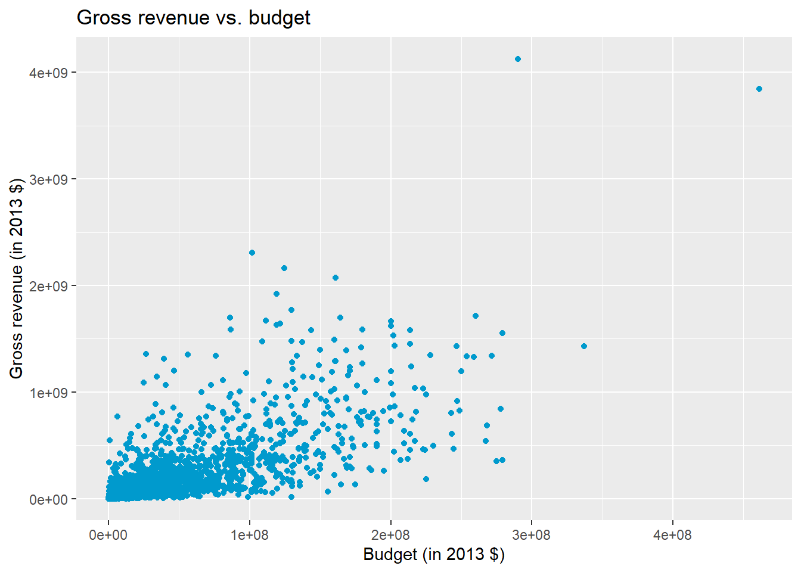
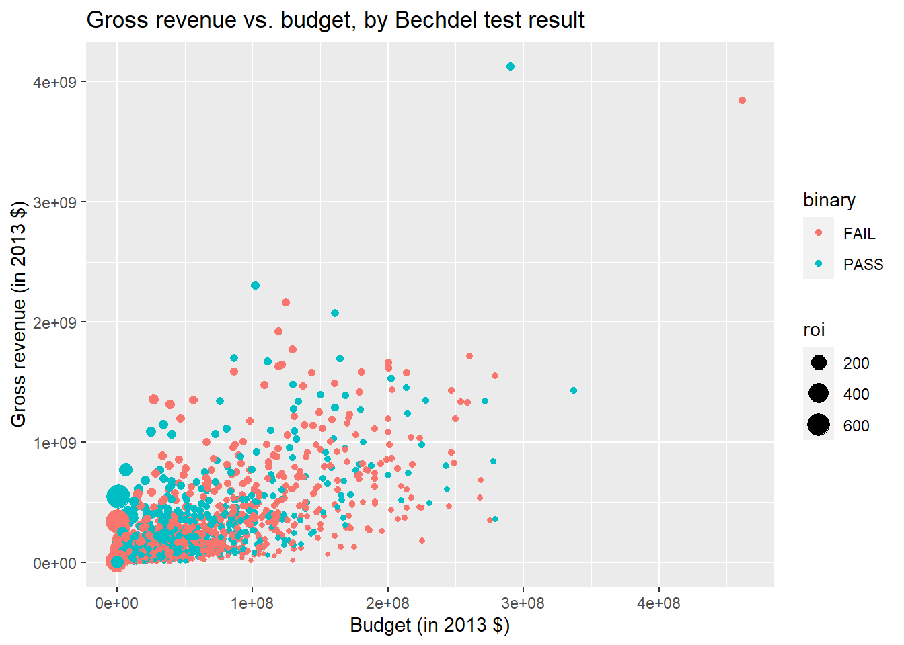
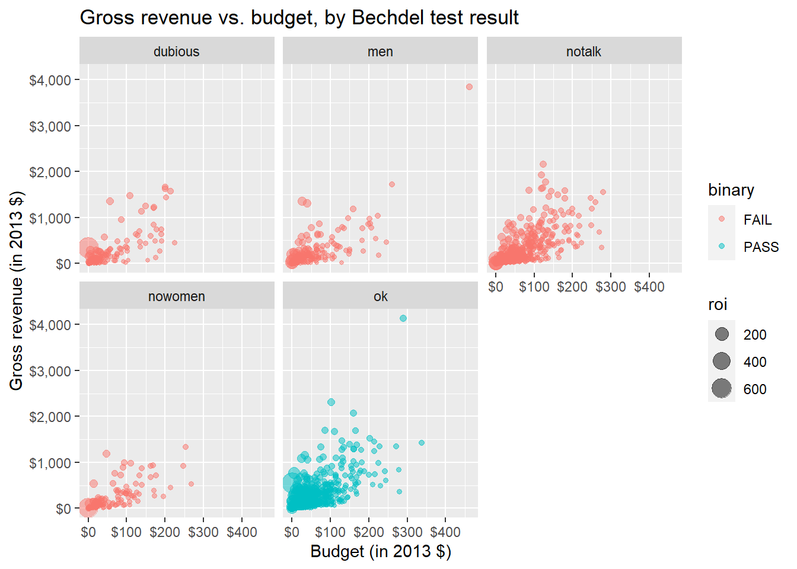

Warning: Removed 15 rows containing missing values (`geom_point()`).
In this mini analysis we work with the data used in the FiveThirtyEight story titled “The Dollar-And-Cents Case Against Hollywood’s Exclusion of Women”.
This analysis is about the Bechdel test, a measure of the representation of women in fiction.
We start with loading the packages we’ll use: tidyverse for majority of the analysis and scales for pretty plot labels later on.
The data are stored as a CSV (comma separated values) file in the data folder of your repository. Let’s read it from there and save it as an object called bechdel.
This a modified version of the bechdel dataset from the previous application exercise. It’s been modified to include some new variables derived from existing variables as well as to limit the scope of the data to movies released between 1990 and 2013. For now we’re not going to discuss how these modifications were made (that’s next week’s topic) but if you’re curious, you can find the data prep script in the data/ folder of your repo. Don’t spend too long trying to decipher it, wait till next week when you have the right tools to do so!
We can use the glimpse function to get an overview (or “glimpse”) of the data.
With your output, confirm that:
– There are movies in the dataset
– There are variables (columns) in the dataset
What does each observation (row) in the data set represent?
Each observation represents a movie.
The variables we’ll focus on are the following:
budget_2013: Budget in 2013 inflation adjusted dollars.gross_2013: Gross (US and international combined) in 2013 inflation adjusted dollars.roi: Return on investment, calculated as the ratio of the gross to budget.clean_test: Bechdel test result:
ok = passes testdubiousmen = women only talk about mennotalk = women don’t talk to each othernowomen = fewer than two womenbinary: Bechdel Test PASS vs FAIL binaryWe will also use the year of release in data prep and title of movie to take a deeper look at some outliers.
There are a few other variables in the dataset, but we won’t be using them in this analysis.
ggplot2ggplot2 is the package and ggplot() is the function in this package that is used to create a plot.
ggplot() creates the initial base coordinate system, and we will add layers to that base. We first specify the data set we will use with data = bechdel.mapping argument is paired with an aesthetic (aes()), which tells us how the variables in our data set should be mapped to the visual properties of the graph.As we previously mentioned, we often omit the names of the first two arguments in R functions. So you’ll often see this written as:
Note that the result is exactly the same.
geom_xx function specifies the type of plot we want to use to represent the data. In the code below, we use geom_point which creates a plot where each observation is represented by a point.Warning: Removed 15 rows containing missing values (`geom_point()`).
Note that this results in a warning as well.
This warning represents the number of observations that were removed because there were missing data!
The following code changes the color of all points to coral. Explore different colors by changing “coral” to different colors!
See http://www.stat.columbia.edu/~tzheng/files/Rcolor.pdf for many color options you can use by name in R or use the hex code for a color of your choice.
Add labels for the title and x and y axes using labs. Do this by modifying the existing code below.
ggplot(bechdel,
aes(x = budget_2013, y = gross_2013))+
geom_point(color = "deepskyblue3") +
labs(
x = "Budget (in 2013 $)",
y = "Gross revenue (in 2013 $)",
title = "Gross revenue vs. budget"
)Warning: Removed 15 rows containing missing values (`geom_point()`).
An aesthetic is a visual property of one of the objects in your plot. Commonly used aesthetic options are:
Modify the plot below, so the color of the points is based on the variable binary, and make the size of your points based on roi.
ggplot(bechdel,
aes(x = budget_2013, y = gross_2013,
color = binary, size = roi)) +
geom_point() +
labs(
x = "Budget (in 2013 $)",
y = "Gross revenue (in 2013 $)",
title = "Gross revenue vs. budget, by Bechdel test result"
)Warning: Removed 15 rows containing missing values (`geom_point()`).
Expand on your plot from the previous step to make the transparency (alpha) of the points 0.5.
Expand on your plot from the previous step by using facet_wrap to display the association between budget and gross for different values of clean_test.
Improve your plot from the previous step by making the x and y scales more legible.
Make use of the scales package, specifically the scale_x_continuous() and scale_y_continuous() functions.
library(scales)
ggplot(bechdel,
aes(x = budget_2013, y = gross_2013,
color = binary, size = roi)) +
geom_point(alpha = 0.5) +
facet_wrap(~clean_test) +
scale_x_continuous(labels = label_dollar(scale = 1/1000000)) +
scale_y_continuous(labels = label_dollar(scale = 1/1000000)) +
labs(
x = "Budget (in 2013 $)",
y = "Gross revenue (in 2013 $)",
title = "Gross revenue vs. budget, by Bechdel test result"
)Warning: Removed 15 rows containing missing values (`geom_point()`).
Expand on your plot from the previous step by using facet_grid to display the association between budget and gross for different combinations of clean_test and binary. Comment on whether this was a useful update.
Is this type of facet useful? Why or why not?
This was not a useful update as one of the levels of clean_test maps directly to one of the levels of binary.
What other improvements could we make to this plot?
We could make the plot better by…